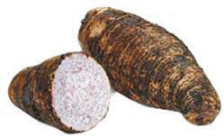

Viazi vya kuning’inia

Magimbi

Viazi vitamu
Viazi vikuu
Kielelezo namba 4: Baadhi ya mazao ya asili
Maarifa na ujuzi wa asili katika uvuvi vilifanyika kwa kutumia nyavu, ndoano, madema, mitumbwi na mitego ya asili ya kuvulia samaki kama vile matenga. Chunguza Kielelezo namba 5 na 6 kama mifano ya vyombo vilivyotumika katika uvuvi.
Maarifa na ujuzi wa asili katika uvuvi
Maarifa na ujuzi wa asili katika uvuvi vilifanyika kwa kutumia nyavu, ndoano, madema, mitumbwi na mitego ya asili ya kuvulia samaki kama vile matenga. Chunguza Kielelezo namba 5 na 6 kama mifano ya vyombo vilivyotumika katika uvuvi.
Kielelezo namba 5: Maarifa na ujuzi wa asili wa jamii katika uvuvi